포탑에 붙은 햄버거? - 칼리 구명정 이야기
게시: 2022-08-18T06:30:15+09:00
아래 사진은 WW2 당시의 이탈리아 해군 전함 로마(Roma)의 모습입니다. 주포탑의 윗면을 보면 뭔가 햄버거 패티 같은 것들이 붙어있지요? 저게 과연 무엇일까요? 다름 아닌 구명정인데, 여기에는 나름 사연이 있습니다.
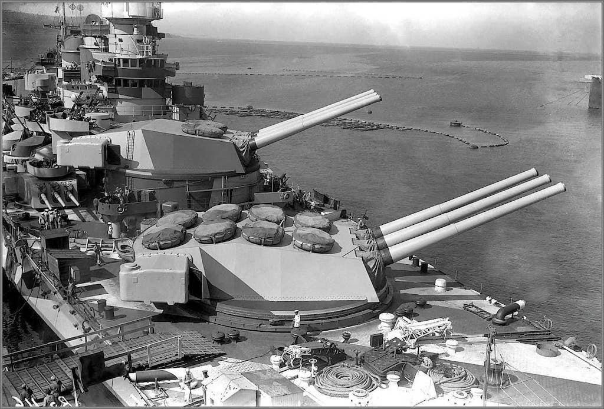
20세기 초반까지, 민간 선박이건 군함이건 구명정에는 문제가 많았습니다. 19세기 전반까지 사용된 범선 전열함들은 나무로 만들어졌기 때문에 포격전을 벌여도 어지간해서는 침몰하지 않았습니다. 적함에 대포를 쏘는 이유는 격침보다는 적의 돛대와 삭구를 망가뜨려 추진력을 뺴앗거나, 적의 수병들을 쓰러뜨리기 위함이었고, 궁극적으로는 적함에 뛰어들어 백병전을 벌인 뒤 적함을 나포하는 것이 해전의 결말이었습니다. 이렇게 빼앗은 적함에 대해서는 보상금이 주어졌으므로 함장이나 수병들이나 모두 격침보다는 나포를 원했습니다. 당시 포격전은 이렇게 돛대와 삭구, 그리고 사람을 상하게 하는 것이 목적이었으니 비록 충격신관이 달린 폭발탄이 아니라고 해도 상당히 격렬했고 구형탄(roundshot)은 물론, 포도탄(grapeshot)과 사슬탄(chainshot) 등이 배의 온갖 부분에 크고 작은 구멍을 냈습니다. 그리고 이렇게 구멍이 나는 배의 일부에는 당연히 갑판에 보관한 longboat나 jollyboat 등도 포함되어 있었습니다. 즉, 배가 침몰할 정도로 심한 포격을 받을 경우에는 정작 필요한 구명보트는 대개 이미 산산조각이 나버린 경우가 많았습니다.
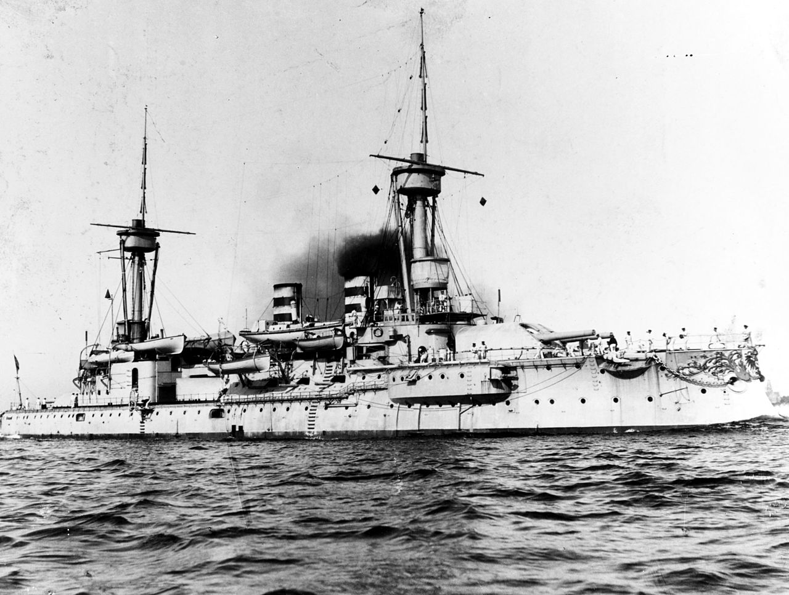
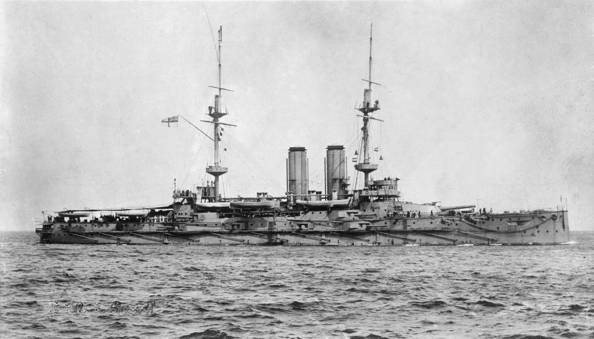
(위는 1900년 경의 독일 해군 전함 SMS Wörth, 아래는 역시 비슷한 시기의 영국 해군 전함 HMS Russell입니다. 현측에 구명 보트들이 주렁주렁 달려 있습니다만, 현측 사격을 주고 받는 것이 전함이 하는 일인데, 그렇게 포탄을 주고 받다 보면 정작 저 보트들이 필요할 때 저런 보트들이 몇 척이나 남아나겠습니까?) 당시 해전 중에는 격침되는 군함이 별로 없었기 때문에 전투시에는 별 문제가 되지 않았으나, 오히려 좌초나 충돌, 풍랑 등으로 인한 사고시에는 당시 구명정의 문제가 종종 드러났습니다. 거친 파도에 흔들려 떨어지지 않도록, 평소에는 jollyboat니 longboat니 하는 보트들을 갑판 위에 단단히 밧줄로 묶어놓았고, 육지나 다른 선박으로 갈 일이 있을 때는 현측의 기중기를 이용하여 바다 위에 얌전히 내려놓아야 이런 보트들을 쓸 수 있었습니다. 그런데 이런 작업은 당연히 시간과 인력이 꽤 들어가는 일이었습니다. 거센 풍랑을 견디다 못해 배가 침몰하거나 하는 경우 침착하게 이런 보트들을 바다 위에 내려놓는 것은 쉽지 않은 일이었습니다. 수십 명이 탈 수 있는 이런 보트들은 상당히 무거웠기 때문에 힘센 선원들도 기중기를 이용하지 않고서는 갑판에서 바다 위로 던질 수도 없었고, 던질 수 있다고 해도 뒤집히기 딱 쉽상이었습니다.
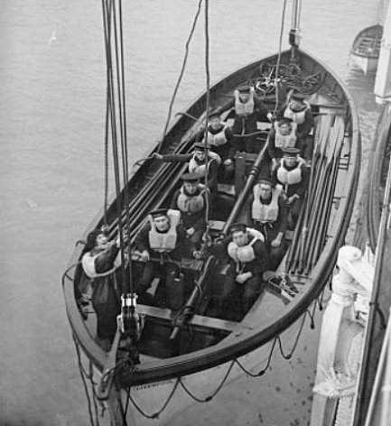
(보트를 내리는 것은 그 자체가 꽤 시간도 많이 걸리고 힘든 작업입니다.)
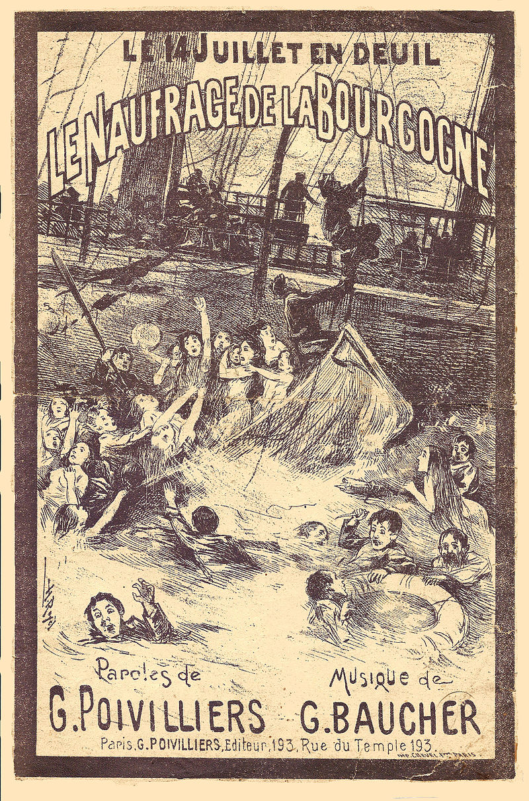
(가령 1898년 7월, 캐나다 동해안 노바 스코시아(Nova Scotia) 인근의 한밤중 안개 속에서 영국 선박과 충돌한 프랑스 여객선 라 부르고뉴(La Bourgogne)는 726명의 승객 및 선원 중 549명이 목숨을 잃었습니다. 이렇게 많은 사람이 희생된 이유는 구명보트의 문제가 컸습니다. 영국 선박과 우현 쪽으로 충돌하는 바람에 우현의 구명보트들이 모조리 박살났고, 우현 쪽에 물이 새어들어오느라 배가 우현 쪽으로 기울었기 때문에 멀쩡한 좌현의 구명보트들을 기중기로 바다 위에 제대로 내릴 수가 없었습니다.) 가령 1893년 6월 22일, 레바논 앞바다에서 충돌 사고로 13분 만에 침몰한 영국 해군 장갑전함 HMS Victoria의 경우 358명이 익사했고 357명이 구조되었는데, 빅토리아의 수병들은 보트를 내리지 못하고 그냥 바다에 뛰어들어야 했습니다. 그나마 이렇게 절반의 수병들이 구조된 것은 바로 옆에서 함께 훈련 중이던 HMS Collingwood 등 같은 함대 군함들 덕분이었습니다. 특히 콜링우드는 마침 증기 엔진이 달린 대형 보트를 내려놓고 있는 상태였던 것이 큰 도움이 되었습니다.
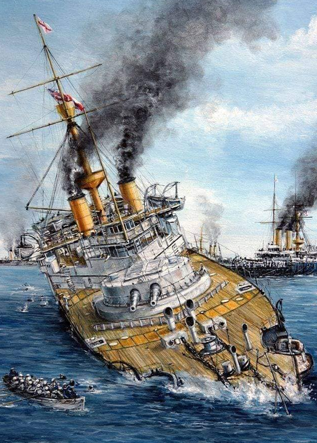
(HMS Victoria의 침몰 장면입니다. 구명보트가 양측에 있습니다만 평소에 단단히 고정되어 있는 저 보트를 풀러서 내릴 상황이 아니었습니다.)
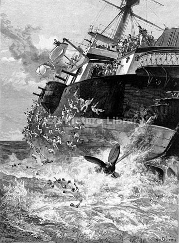
(HMS Victoria처럼 빠르게 침몰하며 한쪽으로 배가 기울면, 최소한 한쪽 현측에 매달린 구명보트들은 모조리 사용불가 상태가 됩니다. 그림에서 보시는 것처럼 기중기를 통해 바다 위로 내릴 수가 없기 때문입니다.) 영국 해군에서 이런 문제점의 해결을 위해 노력한 사람은... 딱히 없었습니다. 그나마 문제 해결의 실마리를 제공한 사람은 다름아닌 워털루의 영웅인 영국 육군의 웰링턴 공작이었는데, 물론 의도한 바는 아니었습니다. 1838년, 미국인 엔지니어 찰스 굿이어(Charles Goodyear, 굿이어 타이어의 그 굿이어 맞습니다)가 황을 첨가하여 고무를 경화시키는 공정, 즉 가황공정(vulcanization)을 발명합니다. 이를 통해 고무의 성형이 가능해졌고, 덕분에 나무를 쓰지 않고 그냥 전체를 고무 주머니로 만든 고무 보트를 만들 수 있게 되었습니다. 바로 1년 뒤, 영국 육군의 웰링턴 공작이 이 고무 보트를 이용한 테스트를 시작합니다. 웰링턴 공작은 당연히 해군을 위한 구명정에는 전혀 관심이 없었고, 그는 이 고무 보트로 부교(pontoon)을 놓는 테스트를 했습니다.
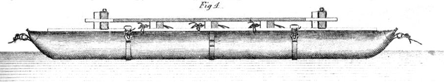
(초창기의 부교용 고무 보트입니다. 겉에 고무를 입힌 캔버스 천으로 만든 것인데, 여기에 공기를 입으로 불어넣으려면 정말 부교병들의 폐활량이 엄청나야 할 것 같습니다.) 해군에서 고무 보트를 이용할 생각을 하게 된 것은 다시 몇 년이 흐른 1844년, 할킷(Peter Halkett) 대위라는 사람이 1~2인용 고무 보트를 만들면서부터였습니다. 다만 할킷도 이걸 구명보트로 만든 것은 아니었고 극지 탐험용으로 등에 매고 다닐 수 있는 휴대용 보트를 만든 것이었습니다.
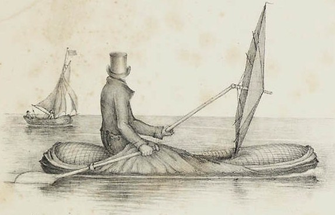
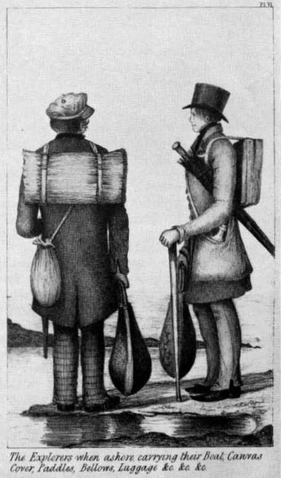
(할킷 대위의 탐험용 고무 보트입니다. 평소에는 접어서 등에 매고 다닐 수 있고, 우산을 돛처럼 사용할 수 있게 되어 있습니다.) 그러나 해군에서는 이걸 구명정으로 쓸 생각이 전혀 없었습니다. 그럴 만도 한 것이, 일단 이건 입으로 공기를 불어 넣어야 하는 물건이었습니다. 배가 침몰하는 긴박한 순간에 입으로 공기를 불어넣는 것은 시간이 너무 오래 걸리는 일이었고, 미리 공기를 집어 넣은 채 보관한다면 작은 파편에도 고무가 뚫리기 쉽상이니 군용 구명정으로는 영 쓸모가 없었습니다. 해킷은 이걸 레저용으로라도 판매해 보려했으나, 레저용으로 쓰기엔 폼이 나지 않았는지 상업적으로도 성공은 못 했습니다. 그러다가 구명정에 획기적인 발명이 19세기 말에 이루어집니다. 그리고 그 발명을 해낸 사람은 저명한 해군 장교나 엔지니어가 아니었습니다. 딱히 직업이 일정치 않았던 호레이스 칼리(Horace Carley)라는 60대 미국 남성이었습니다.
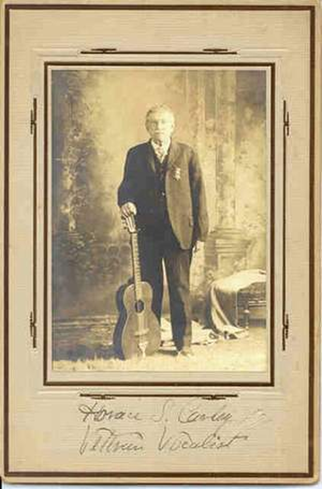
(홀레이스 칼리의 몇 안되는 사진 중 하나입니다. 기타를 들고 있는 이유는 그가 직업적인 가수이기도 했기 때문입니다.) 칼리는 10대 시절 포경선에서 일하기도 하고 청년 시절에는 미국 남북전쟁에서 수병으로 싸우기도 했습니다. 그 외에는 딱히 항해 관련 일을 하지는 않았고, 직업적인 가수 및 연주자 생활도 했고 건물 인테리어 사업을 하기도 했습니다. 그러다 나이가 60대에 들어선 무렵에 어떻게 해서인지는 몰라도 획기적인 구명정, 즉 후에 칼리 구명정 (Carley float, Carley raft)이라고 알려진 물건을 발명했고, 1903년에는 미국에서 특허권도 승인 받았습니다.
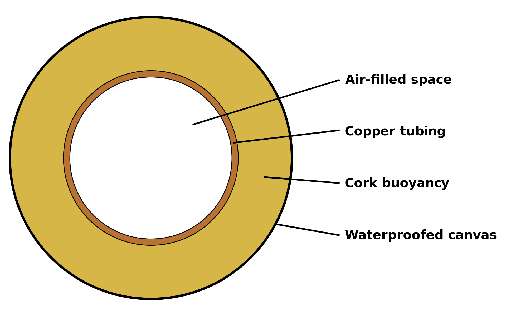
(칼리 구명정은 사실상 큰 튜브인데, 그 단면은 위 그림과 같습니다.) 이건 겉보기와는 달리 고무보트가 아니었습니다. 핵심은 직경 약 50cm 정도의 밀봉된 구리관으로 된 튜브였습니다. 여기에 부력과 강도를 더하기 위해 코르크 같은 가벼운 목재를 덧대고, 겉을 방수포로 감싼 것이 기본 구조였습니다. 그리고 일반적으로 생각하는 것과는 달리, 튜브 안쪽은 고정된 바닥이 없었고 긴 목판들을 엮어서 밧줄로 튜브에 묶어 늘어뜨린 구조였습니다. 즉, 이건 수영장에서 쓰는 거대한 튜브 같은 것일 뿐 보트가 아니었고, 이 속에 들어가 있으면 밧줄로 고정된 발판에 서 있을 수는 있었지만 하반신은 바닷물에 그대로 잠긴 상태가 되는 것이었습니다.
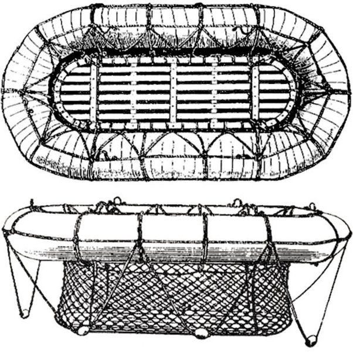
(칼리 구명정의 구조입니다.) 이렇게 만든 이유는 긴급 상황에서 힘센 선원들이 아무렇게나 바닷물 속에 집어던져도 되도록 하기 위함이었습니다. 제대로 된 보트와는 달리 칼리 구명정은 위아래 구분이 없었으므로 뒤집혀진 상태라는 개념 자체가 없었거든요. 그리고 칼리 구명정의 정원은 50명 정도였는데, 반은 튜브의 안쪽에, 나머지 절반은 튜브의 바깥쪽에 매달리게 되어 있었습니다.
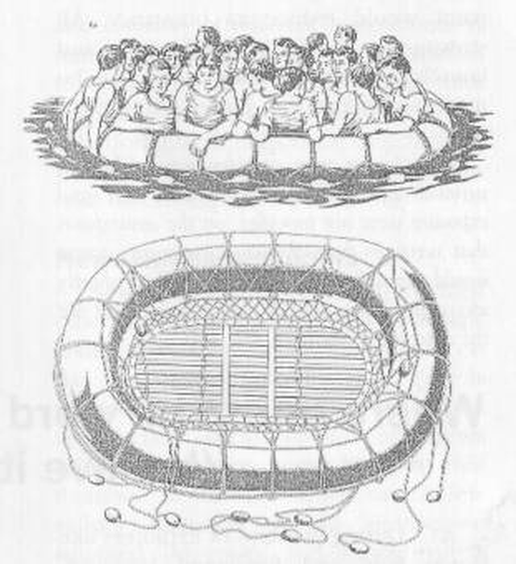
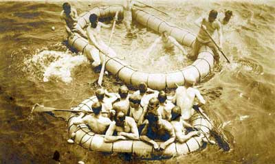
(칼리 구명정의 사용 훈련 장면입니다.) 이 칼리 구명정은 특히 WW1 이후 전세계에 널리 퍼졌고, WW2의 군함들은 연합군이건 추축군이건 포탑 등에 칼리 구명정은 덕지덕지 붙이고 다녔습니다. 물론 많은 수병들의 생명을 구했습니다. 1945년 7월, 영화 죠스에서도 언급된 유명한 격침 사건의 주인공인 미해군 순양함 USS Indianapolis (CA-35)의 생존자들 316명 중 상당수도 이 칼리 구명정에 의지하여 살아남았습니다.
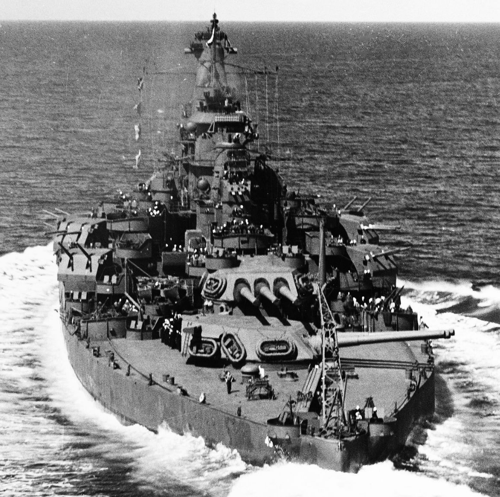
(USS Tennessee입니다. 포탑에 칼리 구명정이 보입니다.)
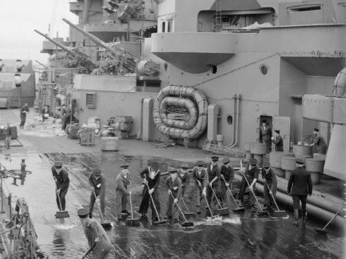
(HMS Rodney의 아일랜드 벌크헤드에 칼리 구명정 크고 작은 것 2척이 포개져 매달려 있습니다.)
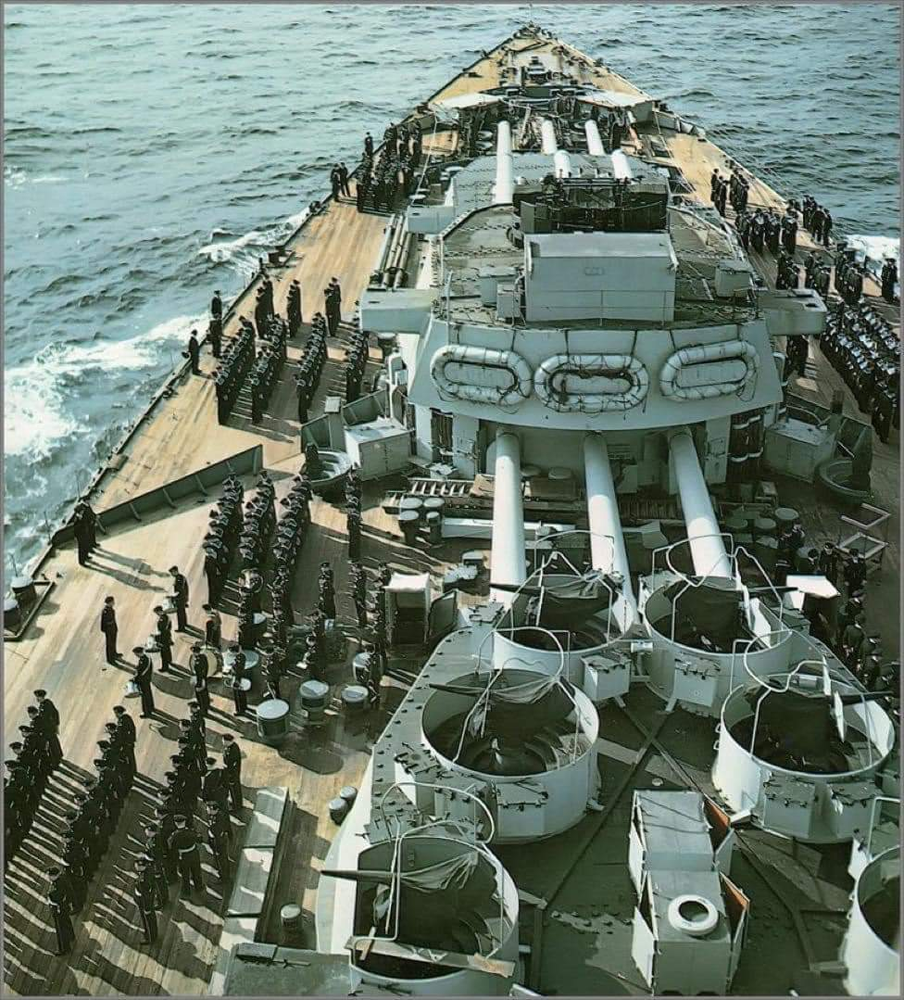
(HMS Nelson의 칼리 구명정입니다.) 당연히 문제도 있었습니다. 하반신을 바닷물에 담그는 구조이다보니, 따뜻한 열대 바다에 빠진 경우엔 문제가 없었지만 추운 바다에 빠진 경우에는 불과 몇 분 만에 얼어죽기 딱 좋았습니다. 결국 1950년 대 이후에는 바닥이 있는 구명정으로 바꾸게 되었습니다. 이렇게 획기적인 구명정을 만든 칼리는 뗴돈을 벌었을까요? 불행히도 그렇지 못했습니다. 그는 이 특허권을 팔지 않고 'Carley Life Float Company'라는 회사를 만들었으나, 이 회사는 비슷한 구조의 구명정을 만드는 다른 회사와의 경쟁에서 완전히 밀렸고 칼리는 특허권 분쟁으로 속만 끓이다 1918년 크리스마스에 세상을 떴습니다. 다만 전세계 모든 해군과 해운사들은 이 구명정을 칼리 구명정이라고 불러 그의 이름은 영원히 남았습니다. 현대적인 해군함에도 당연히 구명정은 있습니다만 눈에 잘 띄지는 않습니다. 보통은 아래 사진처럼 길이 1m 정도의 실린더에 포장되어 있고, 유사시 투하하면 바다 위에서 압축 공기에 의해 자동으로 부풀어올라 구명정이 됩니다. 미해군의 경우 규정상 정원의 110%가 탈 수 있는 구명정을 구비하도록 되어 있답니다.
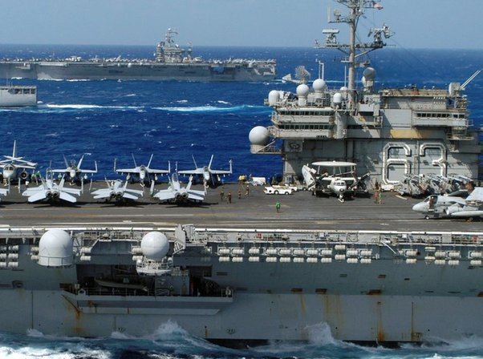
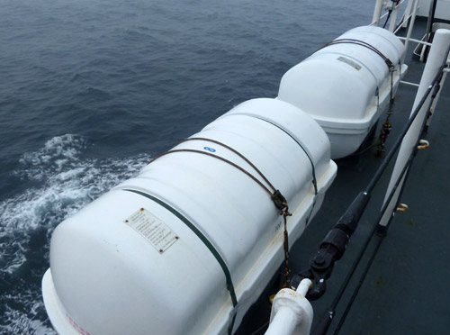
(뱃전에 매달린 저 드럼통처럼 생긴 것이 구명정입니다.)
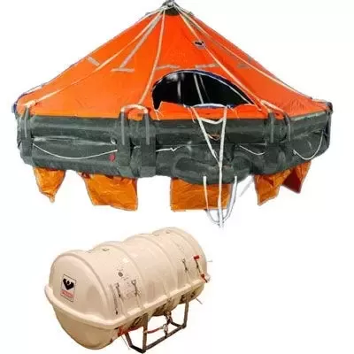
(투하되는 동안 압축 공기에 의해 부풀려져, 윗 그림처럼 근사한 구명정이 됩니다.)
Source : https://en.wikipedia.org/wiki/Carley_float https://en.wikipedia.org/wiki/Inflatable_boat https://en.wikipedia.org/wiki/HMS_Russell_(1901) https://en.wikipedia.org/wiki/SMS_W%C3%B6rth https://navalandmilitarymuseum.org/article/horace-carley/ https://en.wikipedia.org/wiki/SS_La_Bourgogne https://henryzaidan.medium.com/the-victoria-and-camperdown-disaster-01-marine-painting-with-footnotes-275-a2c1f5820bcf https://seaworldblog.wordpress.com/2013/08/14/the-worlds-only-vertical-wreck-hms-victoria/ https://www.fineartstorehouse.com/hulton-archive-prints/topical-press-agency/lifeboat-drill-18361991.html https://en.wikipedia.org/wiki/SS_La_Bourgogne